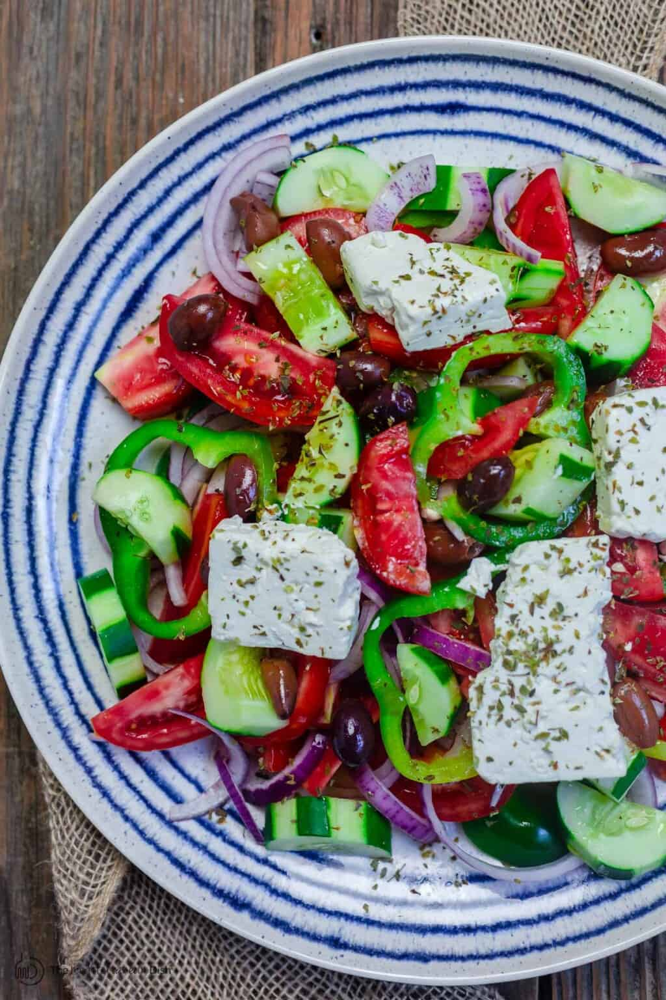

Greek Salad

Description
Make a fresh and colourful Greek salad in no time.
It's great with grilled meats at a barbecue, or on its own as a veggie main
Ingredients
- 4 large tomatoes, cut into irregular wedges
- 1 cucumber, peeled, deseeded, then roughly chopped
- ½ a red onion thinly sliced
- 16 Kalamata olives
- 1 tsp dried oregano
- 85g feta cheese, cut into chunks
- 4 tbsp Greek extra virgin olive oil
Preparation
- Place 4 large vine tomatoes, cut into wedges, 1 peeled, deseeded and chopped cucumber, ½ a thinly sliced red onion,
16 Kalamata olives,
1 tsp dried oregano, 85g feta cheese chunks and 4 tbsp Greek extra virgin olive oil in a large bowl.
- Lightly season, then serve with crusty bread to mop up all of the juices